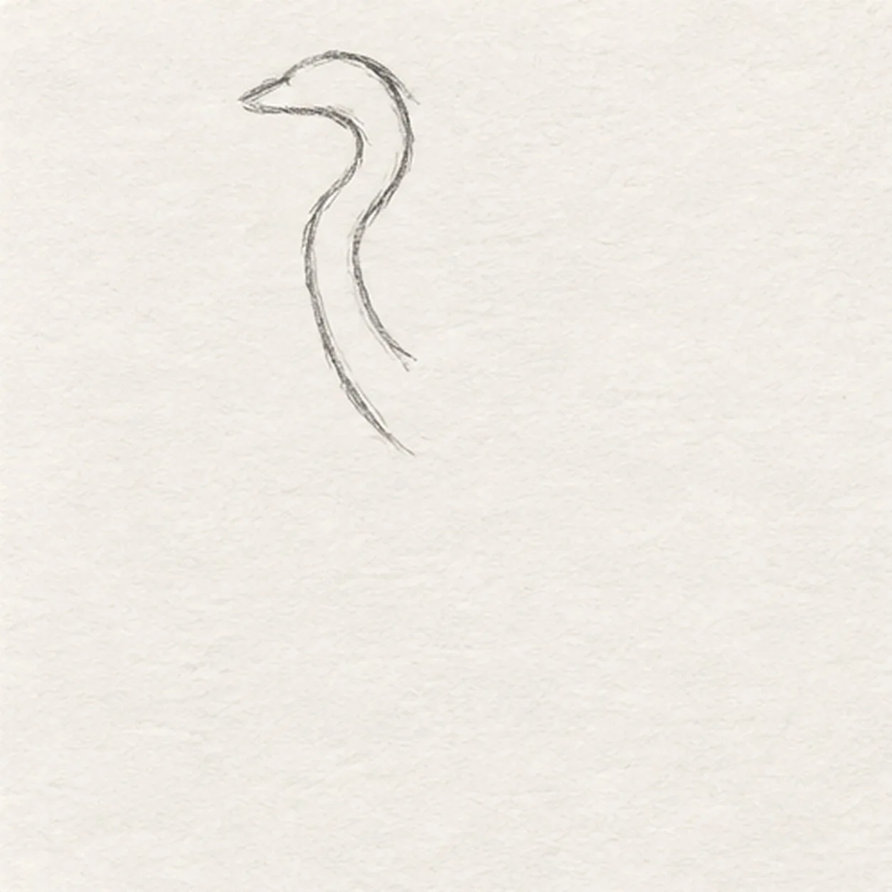
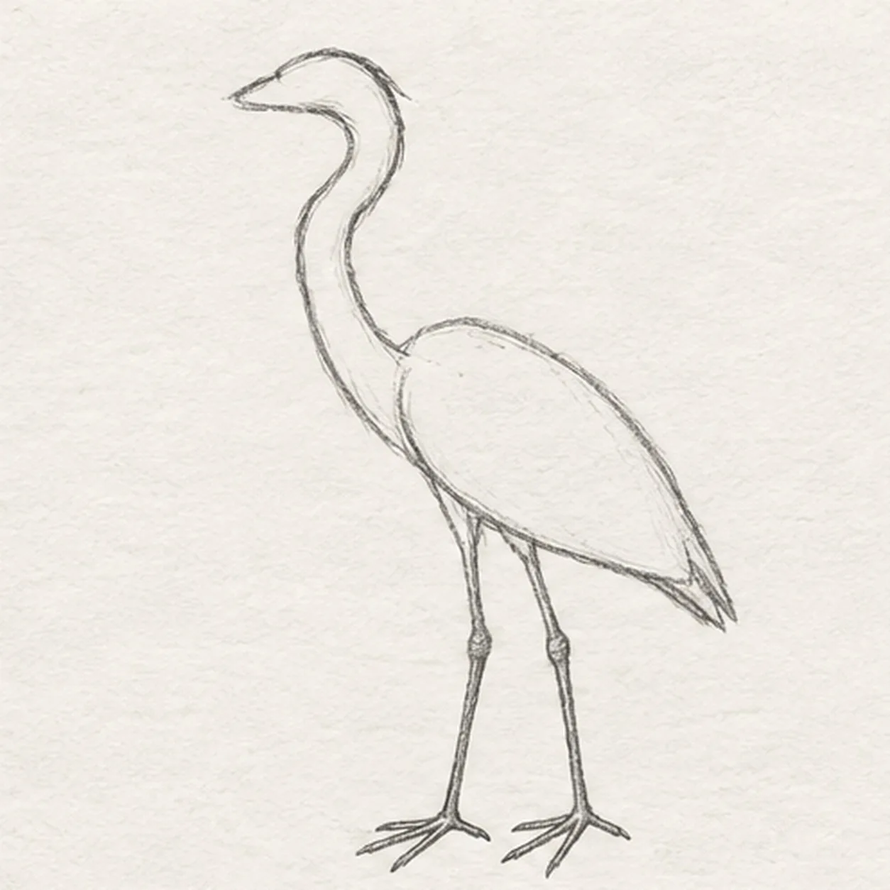
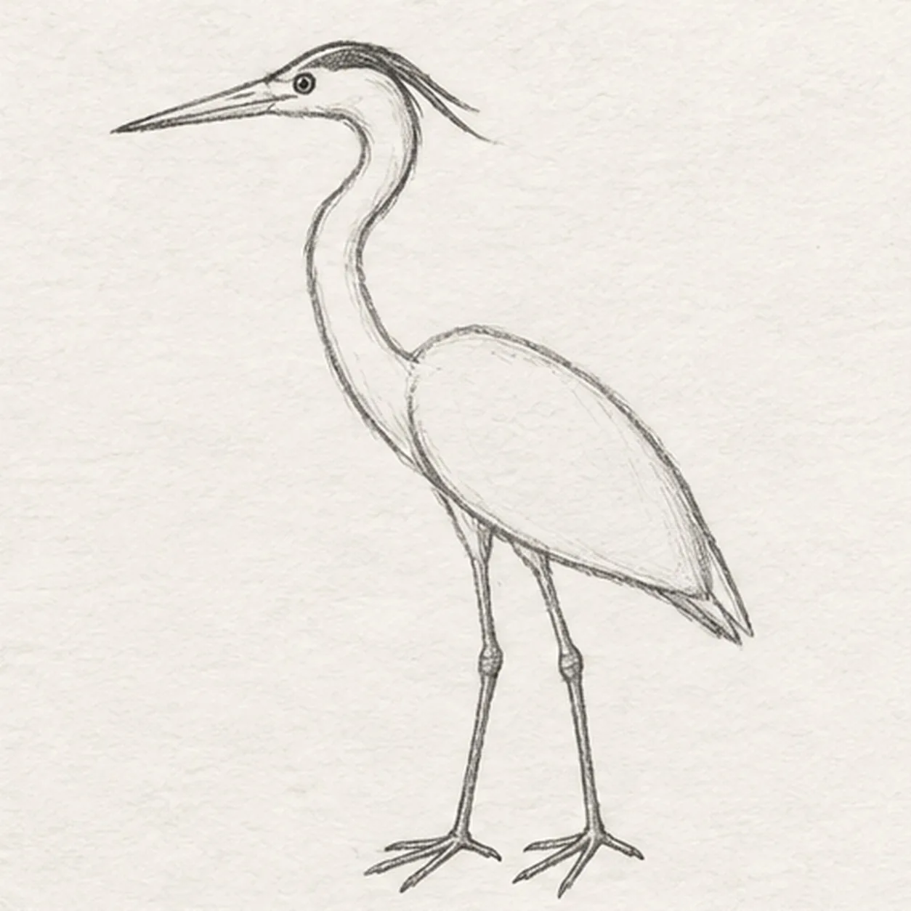
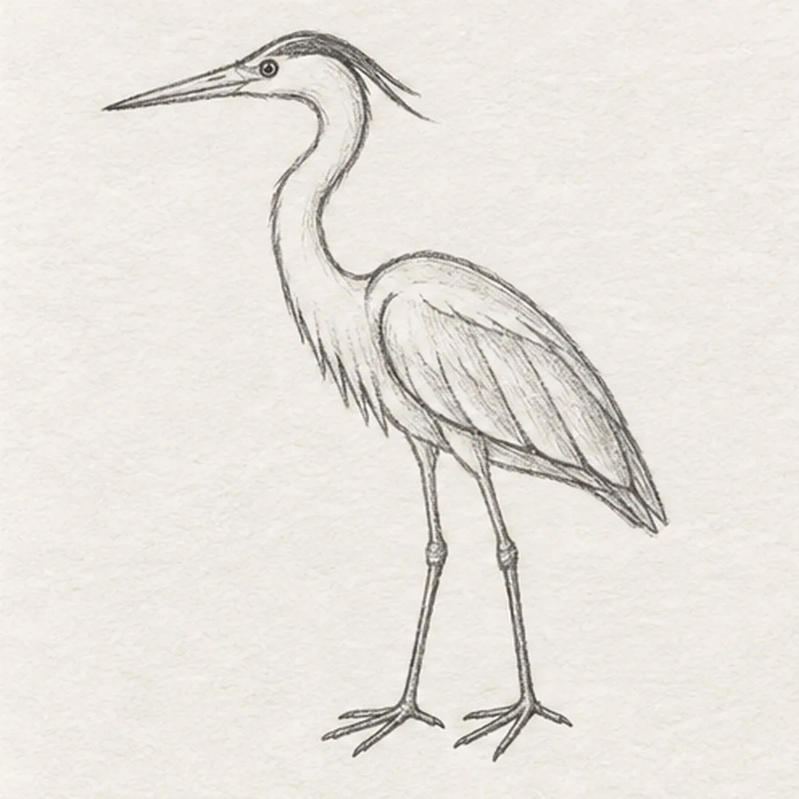
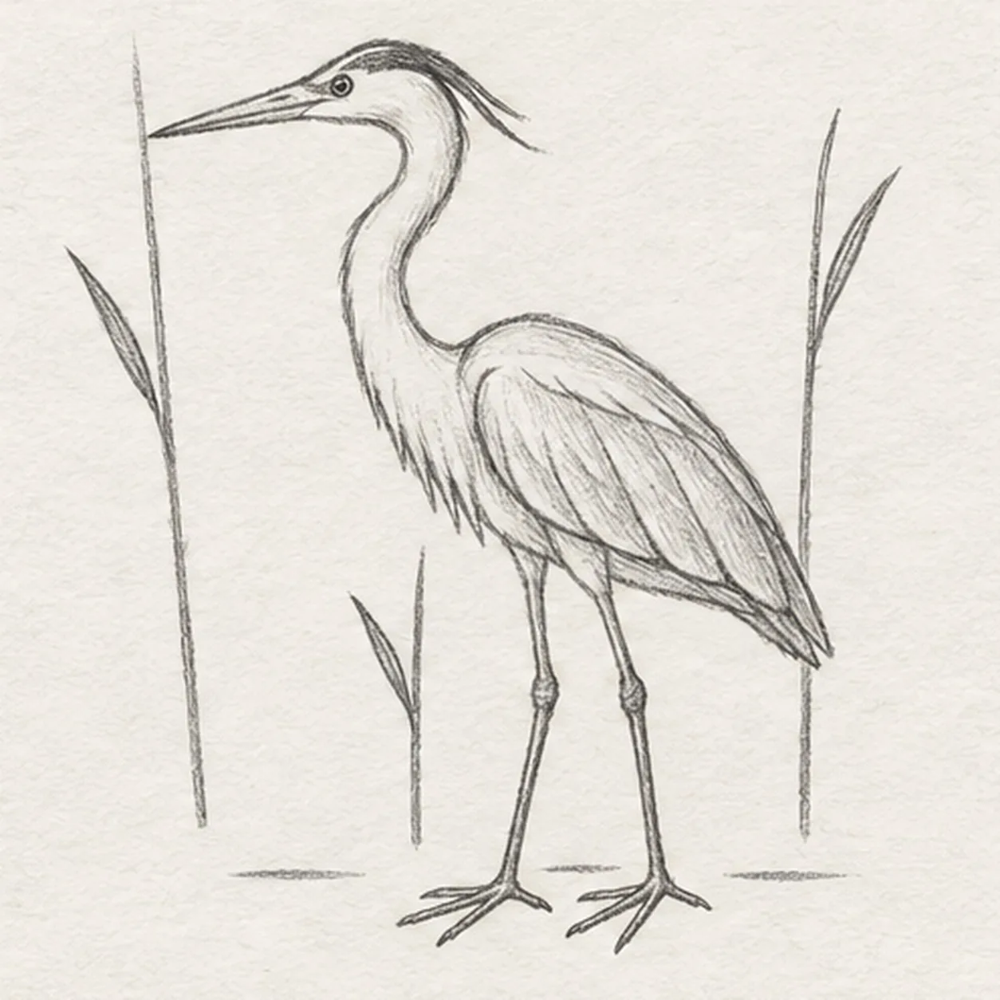

From the archive
Let's draw a great blue heron
Treat this as one small practice round: build the subject lightly, notice the shapes, then darken only the lines that help the finished sketch.
-
01

Curve the head and neck
Draw one small left-facing head and continue its lower edge into a long S-curved neck. Return along the back of the neck and stop above the shoulder opening, leaving room to attach the body on the right.
Sketch tip: Ghost the S curve twice before touching down. Keep the head small so the neck remains the heron's clearest feature.
-
02

Attach the body and legs
Attach one long oval body and a short pointed tail behind the neck. From two separate points under the body, drop the near leg straight down and the far leg slightly back; split each foot into three forward toes and one rear toe.
Sketch tip: Trace each leg from body to foot with your finger. Count four toes per foot before moving on.
-
03

Add the beak and face
From the front of the head, pull two tapering lines left into one long pointed beak. Place one small dark eye above the beak base and sweep one tapered crown stripe from above the eye toward the back of the head.
Sketch tip: Aim both beak edges at the same sharp point. The crown stripe should follow the skull instead of floating above it.
-
04

Layer the folded wing
Inside the body, draw one folded wing that follows the back and tapers toward the tail. Divide its lower half into three long feather groups, then add a short broken feather edge down the lower neck and chest.
Sketch tip: Keep the wing inside the body contour and point all three feather groups toward the same tail.
-
05

Set the reeds and water
Raise one tall reed behind each side of the heron and a shorter center reed beside the legs, stopping every background line at the bird. Give each reed one narrow leaf, then draw exactly three short horizontal ripple marks around the feet without covering the toes.
Sketch tip: Count three reeds, three leaves, and three ripple marks. Empty paper keeps the marsh from competing with the bird.
-
06

Color the quiet marsh
Layer blue-gray pencil over the body and folded wing, warm ochre on the established beak and legs, muted green on the three reeds, and pale blue through the three ripple marks. Deepen the crown stripe and feather shadows with graphite while leaving paper highlights visible and adding no new contours.
Sketch tip: Use long strokes down the neck and legs and shorter strokes along the feathers. Stop while the paper tooth still shows.

![Handmade graphite and restrained colored-pencil sketch of one left-facing pirate sailing ship with one warm-brown curved wooden hull, one blank stern cabin, one center mast, exactly two square cool-gray sails with two curved seams each, one forked muted-red pennant, one diagonal bowsprit, exactly three taut rigging lines, exactly three round hull portholes, exactly three broken desaturated-blue wave bands, exactly two cool-gray cloud wisps, exactly two open-paper sail highlights, and visible paper tooth](../assets/pirate-sailing-ship-at-sea-finished-v1.webp)